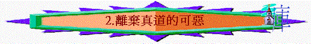

第二課 離棄真道的可惡
〔一：１－１０〕
本課要旨：加拉太眾教會是保羅親自建立的。在他離開以後，他們對真理上的態度竟有急促的轉變，出乎保羅所意料之外。為了挽回他們的錯誤，使徒保羅以最嚴厲的話責備，指責他們正離棄真道，而這只會帶來咒詛性的結局。
１．在本書中，保羅以使徒身分寫信給加拉太人，但這次的自稱與他在其他書信中的自稱有何分別（請注意括弧內所用的形容詞）﹖〔一：１〕
２．試解「不是由於人，也不是藉著人，乃是藉著耶穌基督與叫祂從死裡復活的父神」。〔一：１〕（註一）
ａ．
ｂ．
ｃ．
３．當他寫此信時，有何人與保羅同在﹖他為何提及他們呢﹖〔一：２〕
４．下面為保羅書信問安內容一覽表。
* 書信 * 內容 *
* 羅一 ：７ * 恩惠 * 平安 * 父神 * 主耶穌基督 *
* 林前一：３ * 恩惠 * 平安 * 父神 * 主耶穌基督 *
* 林後一：２ * 恩惠 * 平安 * 父 * 主耶穌基督 *
* 加一 ：３ * 恩惠 * 平安 * 父神 * 主耶穌基督 *
* 弗一 ：２ * 恩惠 * 平安 * 父 * 主耶穌基督 *
* 腓一 ：２ * 恩惠 * 平安 * 父 * 主耶穌基督 *
* 西一 ：２ * 恩惠 * 平安 * 父 * －－ *
* 帖前一：１ * 恩惠 * 平安 * 父神 * 主耶穌基督 *
* 帖後一：２ * 恩惠 * 平安 * 父神 * 主耶穌基督 *
* 提前一：２ * 恩惠 * 憐憫 * 父神 * 基督耶穌 *
* 提後一：２ * 恩惠 * 憐憫 * 父神 * 基督耶穌 *
* 多一 ：４ * 恩惠 * 平安 * 父神 * 救主耶穌基督 *
* 門 ：３ * 恩惠 * 平安 * 父神 * 主耶穌基督 *
那一個祝福詞在每次皆出現﹖含意何在﹖
５．從〔一：３〕裡可以看到基督神性的地位嗎﹖
６．從〔一：４〕「基督．．．為我們的罪捨己」一句話默想：
ａ．主為何要捨己﹖
ｂ．主怎樣捨己﹖
ｃ．主的捨己為救我們脫離甚麼﹖
７．基督為我們的罪捨己，為要「救我們脫離這罪惡的世代」。我們已經
蒙了救贖，但這罪惡的世代對我們還有多少的影響呢﹖請默想。
８．保羅在何處也有提及類似「脫離這罪惡的世代」這種釋放的形容呢﹖
９．保羅在此信的開首語與其他書信之問安語有何分別﹖〔一：５－６〕
10．保羅希奇加拉太人有甚麼改變﹖〔一：６〕（註二）
ａ．
ｂ．
11．關於「別的福音」：（註三）
ａ．它的宣揚者是誰﹖
ｂ．它的特質如何﹖
12．請先填充（下表），後答問題：〔一：８－９〕
| 傳信息者 | 所傳信息內容 | 結局 |
| 1. | 與我們所「傳給你們」的不同 | 2. |
| 有人 | 與你們「3. 」的不同 | 應當被咒詛 |
保羅在這裡發出一個咒詛的宣告，請思想：
ａ．這宣告是向誰發出的，代表甚麼﹖
ｂ．這宣告引致咒詛的因由（注意上表）。
13．請分享在你的觀念中，福音裡有甚麼地方是不可以修改的﹖你能否肯定你所接受的是唯一的福音﹖
14．請兩位組員述說正確的救恩信息。可參〔弗二：８－１０〕。
15．保羅除了使徒職分外，還有甚麼身分呢﹖這身分與我們有關係嗎﹖
16．神所重視的事奉原則是以甚麼為出發點呢﹖請分享你怎樣運用此原則在個人的事奉上。〔一：１０〕
第二課附註：
註一：1)不是由於「人」，是眾數。
2)「藉著」原文有「經過」之意。
3)藉著「人」，是單數。
註二：「離開」原文用被動式、是眾數、是現在進行時式。NASB譯
" deserting "。
註三：1)「別的」原文是指不是同類的不同，乃是完全不同的不同，
是質的不同。
參考答案
第二課：離棄真道的可惡
１．保羅通常以「奉神旨意」來形容他本身使徒的職分〔參林前一：１，林後一：１，弗一：１〕，但在此卻加上「不是由於人，也不是藉著人」來形容，是在保羅書信中所獨有的，顯然是要收信人特別留意他使徒的職分。
２．ａ．表示保羅使徒職分的來源，不是出於任何人或多人的意思。
ｂ．也不是經過人的制度被設立而得，諸如其他使徒的按手、或任何儀式。
ｃ．乃是出於已經復活的主耶穌及父神的揀選。雖他不是主所揀選的十二門徒之一，卻是在主復活後所選召的使徒〔參徒九：５，廿二：２１，廿六：１５－１８〕。所以他是使徒是不容置疑的，初步向那些懷疑其職分的人，提出論據。
３．「眾弟兄」大概是保羅的同工，如果本書是在保羅第一次旅行佈道後所寫，則可能是指巴拿巴及另外一些不知名的同工。在此可以看到保羅雖然是一位神所重用的工人，他卻沒有輕看與他一同勞苦的同工。
４．「恩惠」和「父」每次皆有出現。可見「恩惠」是根源，人要先得著神所賜的恩惠（特別是先得著白白的救恩），才能享受平安、憐憫等福氣。而「父」是救恩的創始者和計劃者，故必須提及。
５．主耶穌與父神有是同等、同有權柄的。從保羅書信中，每當提及福氣的源頭，總說是由父神及主耶穌基督而來，而在〔西一：２〕中雖沒有連同聖子一起提及，但在之後卻著重提及祂神聖的地位，可見主耶穌與父神是同等同權的。
６．ａ．祂為我們的罪捨己。
ｂ．祂「照父神的旨意」為我們捨己，按父神的時間、計劃死在十架。
ｃ．脫離這罪惡的世代。
８．在〔西一：１３〕提及「祂救了我們脫離黑暗的權勢」。
９．保羅一般在問安語中都會為著收信的教會感恩或有稱讚的話，甚至對行為很差的哥林多教會的問安中，仍有些稱讚的話，後才有責備。但在此處一開首就嚴厲的責備教會，可見此處事態非比尋常。
10．ａ．「離開」基督之恩，召他們的神；即加拉太人正受誘惑而正要離開，卻還未完全離開。
ｂ．「隨從」別的福音。
11．ａ．那些攪擾加拉太教會的人（請參前面「綜覽」的習作）。
ｂ．將基督的福音更改。即巧妙地把福音改變，或加多或減少，已使純正的福音變成是不能拯救人的福音。按當時來說，那些人傳一個加上了割禮的福音；他們並非要信徒完全放棄相信福音，乃是在信基督之餘又加上靠割禮，使福音的本質改變了。
12．填充：1. 我們、天上來的使者；2. 應當被咒詛；3. 所領受
ａ．包括：ｉ．「我們」：即保羅及其同工，代表教會的屬靈領袖。
ｉｉ．「天上來的使者」：代表靈界的天使。
ｉｉｉ．「有人」：即任何人。
ｂ．只要有任何的所謂「福音」，其內容與保羅及使徒們起初所傳給加拉太人的福音不同，或與他們所已經接受的福音不同；就會招致咒詛。在此可見不是宣講者本身有任何特別之處，重要的是福音內容，它的權威性及超然性是不容刪改的〔參啟廿二：１８－１９〕，否則只會招致咒詛。
13．請參看〔林前二：２－３及十五：１－４〕。人只可單單相信主耶穌為人的罪釘死、埋葬、復活，作為得救唯一的根據，也就是福音的核心內容。至於用甚麼方法去傳揚，則可以不同；方法是次要，重要的是內容。
15．基督的僕人。保羅常以此在書信中自稱〔參羅一：１，腓一：１，西一：１〕，而我們也同樣有此身分〔弗六：６〕。
16．以得神喜悅的心去事奉神，在不能既得人的喜歡又得神喜歡的同時，只求神的稱許。
2)「更改」原文有轉變之意，並非否定或推翻，而是有稍微之
變動。
3)「攪擾」用現在進行時式。